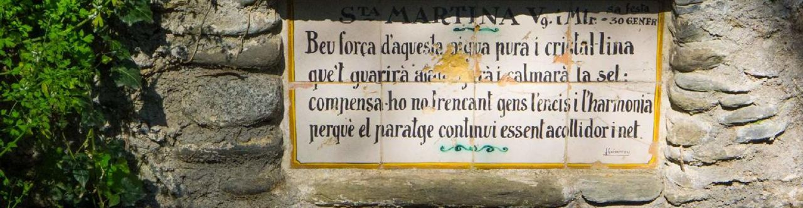

Ruta · Palautordera
Les fonts són una excusa ideal per sortir a fer una excursió, sempre hi trobarem alguna història o curiositat per explicar, a més, formen part del patrimoni històric i cultural a preservar.…